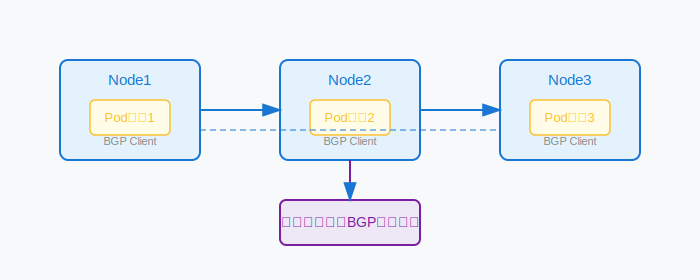

Calico BGP模式是通过BGP协议将Kubernetes各节点的Pod网段动态通告，实现无Overlay的高性能三层网络。适用于需要与物理网络深度集成、追求极致性能和大规模集群的场景。
适用场景
- 数据中心/企业内部网络与K8S集群互通
- 大规模集群，追求低延迟/高吞吐
- 与传统网络设备（如核心路由器）集成
Calico网络模式对比
| 特性 | BGP模式 | IPinIP | VXLAN | WireGuard |
|---|---|---|---|---|
| 封装 | 无 | IPinIP | VXLAN | 可叠加 |
| 性能 | 最高 | 高 | 中 | 中 |
| 跨子网 | 需物理网络支持 | 支持 | 支持 | 支持 |
| 安全性 | 依赖物理网络 | 无加密 | 无加密 | 强加密 |
| 复杂度 | 中 | 低 | 低 | 中 |
BGP（边界网关协议）是一种动态路由协议，广泛用于数据中心和运营商网络。Calico利用BGP自动通告各节点Pod网段，实现全网路由可达。
- AS号：自治系统编号，用于标识网络边界
- BGP Peer：对等体，节点间建立BGP连接交换路由
- Route Reflector：简化大规模集群的BGP连接关系
Calico BGP架构如下图所示：
- 每个Node运行BGP Client（如BIRD），与其它Node或核心路由器建立BGP对等体。
- 各节点将本地Pod网段通告给全网。
- 数据包根据BGP路由表直接转发，无需Overlay封装。
- 可通过Route Reflector优化大规模集群的BGP连接。
（1）启用BGP
calicoctl patch felixconfiguration default --type='merge' -p '{"spec": {"bpfEnabled": false}}'（2）配置BGP对等体
apiVersion: projectcalico.org/v3
kind: BGPPeer
metadata:
name: core-router
spec:
peerIP: 192.168.100.1
asNumber: 64512
（3）配置IP Pool（关闭Overlay）
apiVersion: projectcalico.org/v3
kind: IPPool
metadata:
name: default-pool
spec:
cidr: 10.244.0.0/16
ipipMode: Never
vxlanMode: Never
natOutgoing: true
nodeSelector: all()
（4）Route Reflector配置（可选）
apiVersion: projectcalico.org/v3
kind: BGPPeer
metadata:
name: rr-peer
spec:
peerIP: 192.168.100.10
asNumber: 64512
nodeSelector: "has(role) && node.role == 'rr'"
注意：生产环境建议使用Route Reflector简化BGP连接。
- 合理划分Pod网段，避免路由表过大
- 使用Route Reflector减少Peer数量
- 监控BGP会话状态，及时发现异常
- 关闭不必要的Overlay封装
- 配置合理MTU，防止分片
- 检查BGP会话：
calicoctl node status - 查看路由表：
ip route、birdc show route - 确认Pod网段是否正确通告
- 排查BGP建立失败、路由不通、收敛慢等问题
- 分析日志定位异常
- 生产环境建议引入Route Reflector，避免全互联
- 与网络团队协作，合理分配AS号与网段
- 定期备份配置，开启BGP监控与告警
- 结合Calico网络策略提升安全性